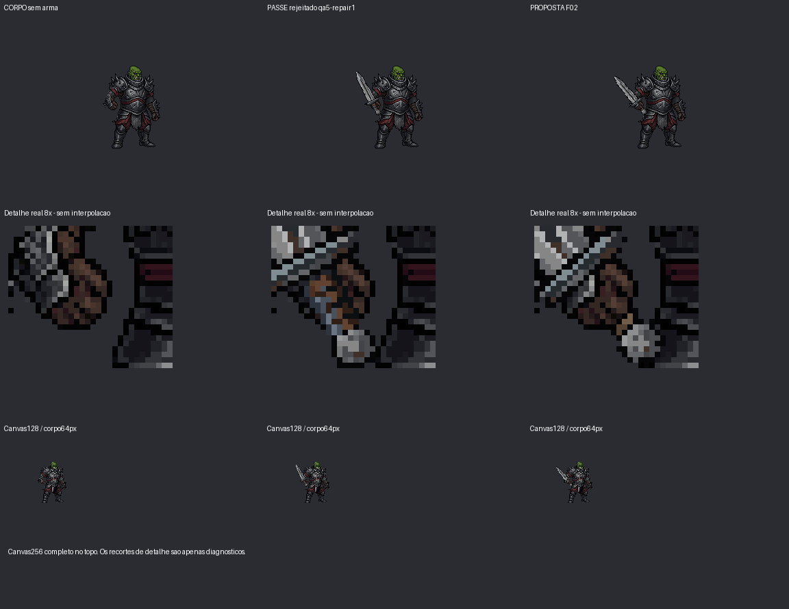
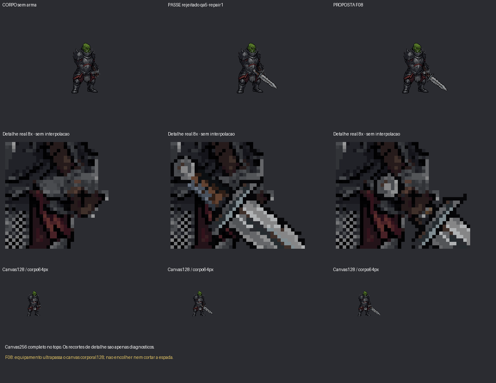

GRIP_F02_F08_READY · VISUAL_REVIEW_REQUIRED · PENDING_CREATOR. Dois representantes parados, aguardando QA GLM5.3/Cline organizado pelo Root. F06 preservado. Não é o ciclo completo nem a entrega dos oito grips.
Escala:
Carregando arquivos reais…
Anatomia anotada · Comparação e detalhe8× · representative.json / hashes

Anatomia anotada · Comparação e detalhe8× · representative.json / hashes
F08: a espada ultrapassa o canvas corporal128. O composto completo usa256; o corpo nativo128 está íntegro. Nenhuma espada foi cortada ou encolhida para caber.
